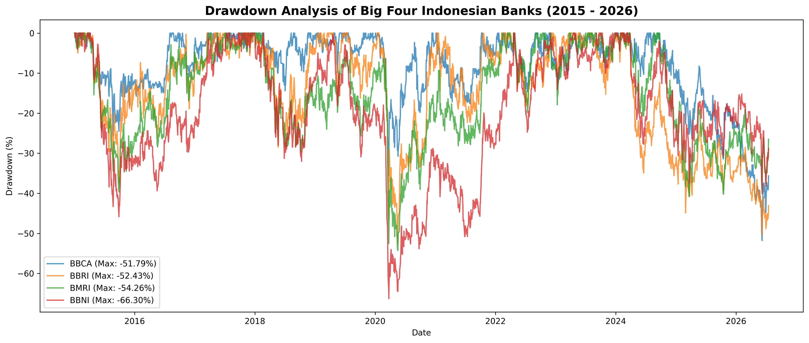
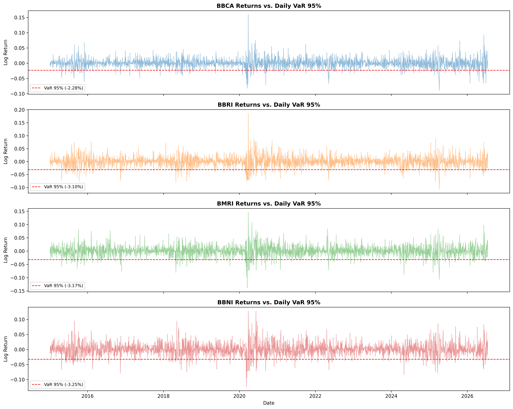

Visualisasi Notebook Empiris (Seaborn Exports)
Hasil analisis Drawdown historis dan distribusi risiko Value at Risk (VaR 95%) dari Jupyter Notebook
Analisis Historical Drawdown (2019-2024)
Kedalaman kejatuhan harga saham 4 bank saat krisis pandemi (Seaborn 300 DPI)

Distribusi Value at Risk (VaR 95%)
Batas potensi kerugian harian maksimum pada tingkat kepercayaan 95%

Optimasi Portofolio Teori Markowitz
Kurva batas efisiensi risiko-imbal hasil dan simulator alokasi bobot interaktif
Diagnosa Risiko Pasar & Parameter Fundamental
Uji stasioneritas aditif, estimasi risiko ekstrim ekor tebal, dan komparasi rasio keuangan
| Emiten | VaR 95% | ES 95% | ADF Test | Kurtosis |
|---|---|---|---|---|
| BBCA | 2.28% | 3.46% | -9.904 | 7.514 (Fat-Tail) |
| BBRI | 3.10% | 4.58% | -28.192 | 4.869 |
| BMRI | 3.18% | 4.63% | -19.593 | 4.128 |
| BBNI | 3.25% | 4.72% | -50.163 | 3.507 |
Uji Jarque-Bera menolak normalitas ($p = 0.000$), membuktikan sebaran return harian memiliki ekor tebal (fluktuasi tajam lebih sering terjadi dibandingkan asumsi distribusi normal).
| Bank | ROE | NPL | NIM | PBV | Korelasi BBCA |
|---|---|---|---|---|---|
| BBCA | 20.5% | 1.9% | 5.5% | 4.8x | 1.000 |
| BBRI | 18.2% | 3.1% | 7.8% | 2.3x | 0.582 |
| BMRI | 21.1% | 1.2% | 5.4% | 2.1x | 0.621 |
| BBNI | 14.5% | 2.3% | 4.4% | 1.2x | 0.554 |
Korelasi tidak sempurna antara BBCA dan BBNI (0.554) memaksimalkan efisiensi diversifikasi portofolio untuk meredam risiko spesifik aset.